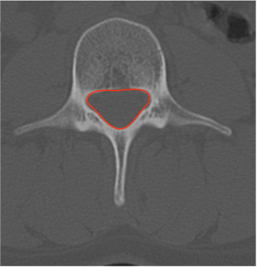

Adapted from: Feger J, Campos A, Murphy A, et al. CT lumbar spine (protocol). Reference article, Radiopaedia.org (Accessed on 03 Jan 2026) https://doi.org/10.53347/rID-90041
1) Description of Measurement
Lumbar spinal canal CSA on CT quantifies the bony cross-sectional area available for the thecal sac and cauda equina. It is a robust morphologic parameter for diagnosing lumbar spinal stenosis, particularly useful when MRI is contraindicated or to characterize osseous encroachment from facet hypertrophy, laminar thickening, or congenital canal narrowing.
2) Instructions to Measure
3) Normal vs. Pathologic Ranges
4) Important References
Maeder B, Becce F, Kehtari S, et al. Evolution of the Cross-Sectional Area of the Osseous Lumbar Spinal Canal across Decades: A CT Study with Reference Ranges in a Swiss Population. Diagnostics (Basel). 2023 Feb 15;13(4):734. doi: 10.3390/diagnostics13040734.
Cho J, Kang KN, Lee MS, Kim YU. Surgical versus nonsurgical management of lumbar degenerative spondylolisthesis based on spinal canal cross-sectional area. Medicine (Baltimore). 2024 Jan 12;103(2):e36874. doi: 10.1097/MD.0000000000036874.
Genevay S, Atlas SJ. Lumbar spinal stenosis. Best Pract Res Clin Rheumatol. 2010 Apr;24(2):253-65. doi: 10.1016/j.berh.2009.11.001.
5) Other info....
CT-based CSA primarily reflects bony stenosis; it does not account for ligamentum flavum or disc material — correlate with MRI dural sac CSA for neural compromise.
Should be interpreted in conjunction with: